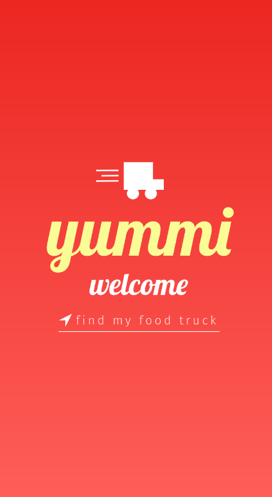

Email: dabsher@mail.depaul.edu
I am a senior at DePaul University majoring in User Experience Design with a concentration in Development. Throughout my time at DePaul University I have taken many courses that have grown my skills in user research and interactive design. I have helped aid in the development of hi-fidelity prototypes. The first one being a food truck app and the second being a single platform Project Mangement System website.
Major:User Experience Design
Concentration:Development
Customer Service, Social Media platforms, multitasking
HTML, CSS, Javascript, Python, Adobe Creative Cloud
 This is an image of the cover a project I helped with in an ISM 210 course,